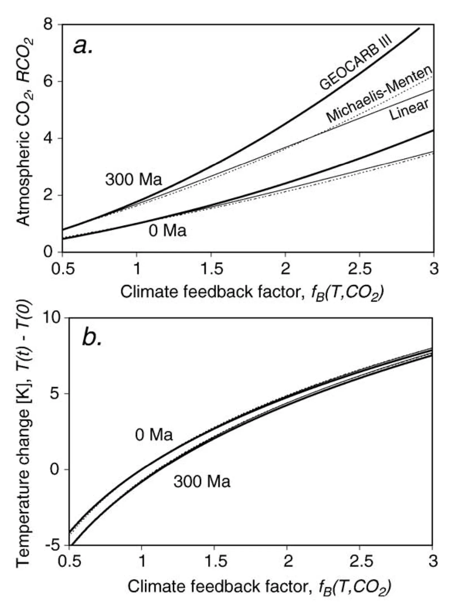

Forests, climate, and silicate rock weathering
Key finding. Because forests absorb more solar radiation than the ecosystems they replace, they warm Earth's climate — especially outside the tropics — and that warming should itself increase silicate rock weathering rates, a climate-mediated pathway distinct from the soil-chemistry effects usually considered, for which the paper develops preliminary parameterizations from general circulation model simulations.

What question did this research address?
Over millions of years, atmospheric CO2 is set by the balance between silicate rock weathering and CO2 sources. Vegetation is known to affect weathering rates locally, by raising soil CO2, stabilizing soils, and producing organic acids.
But forests also change the climate directly, by absorbing more sunlight than most other ecosystems. This paper asked whether that physical effect on climate feeds back into weathering, and how a carbonate-silicate cycle model could represent it.
What did we find?
Existing work on how land biota affect weathering concentrates on local soil processes: stabilizing soil cover, raising soil CO2 concentrations, and producing organic acids.
The albedo pathway is different in kind. A forest is darker than grassland or tundra, so replacing one with the other changes the planet's absorbed sunlight and hence its temperature.
That temperature change is not uniform. The warming from forest cover is concentrated outside the tropics, where the contrast against snow-covered ground is largest.
Because weathering rates rise with temperature, the physical warming from forests should increase CO2 consumption by weathering — a feedback operating through climate rather than through soil chemistry.
Preliminary parameterizations of the effect are derived from general circulation model simulations, in a form that can be inserted into carbonate-silicate cycle models.
Why does it matter?
It connects two literatures that had run separately: the biogeophysics of how vegetation changes climate, and the geochemistry of how vegetation changes weathering.
The albedo effect of forests points the opposite way to their carbon uptake at high latitudes, and this paper adds a third term — the weathering consequence of the resulting warmth — to that already awkward accounting.
It is a small paper making a structural point: a long-term carbon cycle model that treats vegetation only as a soil process is missing a pathway that runs through the climate system.
Citation, data, and code
Ken Caldeira (2006). Forests, climate, and silicate rock weathering. Journal of Geochemical Exploration 88, 419-422.
Related
- How long does a carbon dioxide emission go on warming the planet?
- Long-term control of atmospheric carbon dioxide: low-temperature seafloor alteration or terrestrial silicate-rock weathering? (Caldeira, 1995)
- Enhanced Cenozoic chemical weathering and the subduction of pelagic carbonate (Caldeira, 1992)
- Combined climate and carbon-cycle effects of large-scale deforestation (Bala et al., 2007)